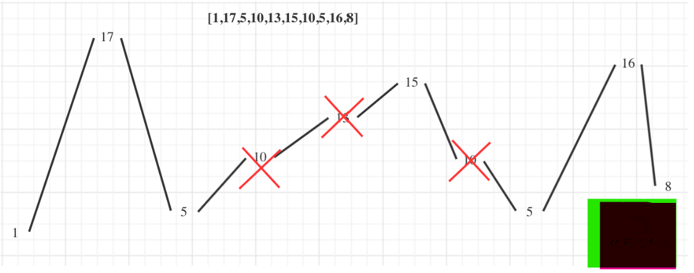

贪心的本质是选择每一阶段的局部最优，从而达到全局最优。
唯一的难点就是如何通过局部最优，推出整体最优。
贪心算法一般分为如下四步：
- 将问题分解为若干个子问题
- 找出适合的贪心策略
- 求解每一个子问题的最优解
- 将局部最优解堆叠成全局最优解
分发饼干
描述：
1
2
3
| 假设你是一位很棒的家长，想要给你的孩子们一些小饼干。但是，每个孩子最多只能给一块饼干。
对每个孩子 i，都有一个胃口值 g[i]，这是能让孩子们满足胃口的饼干的最小尺寸；并且每块饼干 j，都有一个尺寸 s[j] 。如果 s[j] >= g[i]，我们可以将这个饼干 j 分配给孩子 i ，这个孩子会得到满足。你的目标是尽可能满足越多数量的孩子，并输出这个最大数值。
|
示例：
1
2
3
4
5
6
7
8
| 示例 1:
输入: g = [1,2,3], s = [1,1]
输出: 1 解释:你有三个孩子和两块小饼干，3个孩子的胃口值分别是：1,2,3。虽然你有两块小饼干，由于他们的尺寸都是1，你只能让胃口值是1的孩子满足。所以你应该输出1。
示例 2:
输入: g = [1,2], s = [1,2,3]
输出: 2
解释:你有两个孩子和三块小饼干，2个孩子的胃口值分别是1,2。你拥有的饼干数量和尺寸都足以让所有孩子满足。所以你应该输出2.
|
思路：
大尺寸的饼干既可以满足胃口大的孩子也可以满足胃口小的孩子，那么就应该优先满足胃口大的。这里的局部最优就是大饼干喂给胃口大的，充分利用饼干尺寸喂饱一个，全局最优就是喂饱尽可能多的小孩。
也可以换一个思路，小饼干先喂饱小胃口。
解法：
1
2
3
4
5
6
7
8
9
10
11
12
13
14
| var findContentChildren = function(g, s){
let idx1 = 0, idx2 = 0;
let sum = 0;
g.sort((a,b)=>a-b);
s.sort((a,b)=>a-b);
while(idx1<s.length){
if(s[idx1]>=g[idx2]){
idx2++;
sum++;
}
idx1++;
}
return sum;
}
|
摆动序列
描述：
1
2
3
4
5
| 如果连续数字之间的差严格地在正数和负数之间交替，则数字序列称为摆动序列。第一个差（如果存在的话）可能是正数或负数。少于两个元素的序列也是摆动序列。
例如， [1,7,4,9,2,5] 是一个摆动序列，因为差值 (6,-3,5,-7,3) 是正负交替出现的。相反, [1,4,7,2,5] 和 [1,7,4,5,5] 不是摆动序列，第一个序列是因为它的前两个差值都是正数，第二个序列是因为它的最后一个差值为零。
给定一个整数序列，返回作为摆动序列的最长子序列的长度。 通过从原始序列中删除一些（也可以不删除）元素来获得子序列，剩下的元素保持其原始顺序。
|
示例：
1
2
3
4
5
6
7
8
9
10
11
12
13
| 示例 1:
输入: [1,7,4,9,2,5]
输出: 6
解释: 整个序列均为摆动序列。
示例 2:
输入: [1,17,5,10,13,15,10,5,16,8]
输出: 7
解释: 这个序列包含几个长度为 7 摆动序列，其中一个可为[1,17,10,13,10,16,8]。
示例 3:
输入: [1,2,3,4,5,6,7,8,9]
输出: 2
|
思路：

局部最优：删除单调坡度上的节点（不包括单调坡度两端的节点），那么这个坡度就可以有两个局部峰值。整体最优：整个序列有最多的局部峰值，从而达到最长摆动序列。
实际操作上，其实连删除的操作都不用做，因为题目要求的是最长摆动子序列的长度，所以只需要统计数组的峰值数量就可以了（相当于是删除单一坡度上的节点，然后统计长度）。这就是贪心所贪的地方，让峰值尽可能的保持峰值，然后删除单一坡度上的节点。
说的好听，其实就是计算上升下降的次数
解法：
1
2
3
4
5
6
7
8
9
10
11
12
13
14
15
| var wiggleMaxLength = function(nums){
if(nums.length<=1)
return nums.length;
let res = 1;
let preDiff = 0;
let curDiff = 0;
for(let i=0;i<nums.length-1;i++){
curDiff = nums[i+1]-nums[i];
if((curDiff>0&&preDiff<=0)||(curDiff<0&&preDiff>=0)){
res++;
preDiff = curDiff;
}
}
return res;
}
|